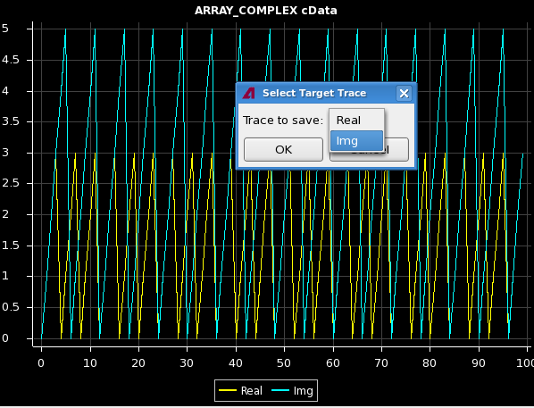
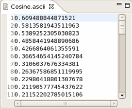

Waveform View
This view graphically shows the contents of an array selected in the Editor view on debugging.
If you highlight an array variable with the mouse during debugging, you can graphically view the captured waveform or calculated results. The following array variable types are supported.
- int[ ], unsigned int[ ], short[ ], long[ ], unsigned short[ ], and unsigned long[ ]
- double[ ] and long double [ ]
- float[ ]
- ARRAY_D
- ARRAY_I
- ARRAY_F
- ARRAY_COMPLEX
- Wave<INT>, Wave<DOUBLE>, Wave<FLOAT> and Wave<COMPLEX>
- the element of the array of ARRAY_D, ARRAY_I, ARRAY_F, ARRAY_COMPLEX
- std::vector<int>, std::vector<double>
- the element of std::vector<ARRAY_D>, std::vector<ARRAY_I>, std::vector<ARRAY_F>, std::vector<ARRAY_COMPLEX>
On the headline, the variable name and data type are shown.
The array data is handled as follows:
- X-axis: DC/DC power units of the array elements
- Y-axis: Values of the array elements
- The graph is automatically scaled based on the maximum value of the array elements.
You can open the Signal Analyzer tool from here if you need to inspect more details or apply calculation algorithm for signal analysis.
Toolbar
Icon |
Command |
Description |
|---|---|---|
Clear Waveform |
Clear the displayed waveform data with the headline in this view. |
|
Show Waveform on Signal Analyzer |
Launch up the Signal Analyzer tool, and the waveform is shown in the tool to analysis the waveform. |
|

|
Menu |
Click the triangle icon to open a menu of items specific to this view. You can select a menu item from a shortcut menu. In this view you can choose Save Trace As or Save Graph As.
Save the displayed waveform into an ASCII file. This file format is the same as Save Trace As... of the Signal Analyzer tool. The ASCII file can be opened in waveform view for later usage. (See Displaying the ASCII waveform file in the waveform view.) If more than one waveform is displayed (i.e. an ARRAY_COMPLEX) the user first has to select which one of the traces should be saved. To do that, a dialog with a selection list containing all traces is presented before the usual file dialog [see screenshot below].
|
|
Minimize |
Minimizes this view. |

|
Maximize |
Maximizes this view. |
The following picture illustrates the case of a COMPLEX_ARRAY waveform. In this case you need to select which trace will be saved.

Shortcut menu
- Paste
Reads the waveform data from clipboard and displays the data in the waveform view. The copied data must be non-encrypted data of ASCII waveform file. Every point of the waveform must be in one line in the copied data. The data can be copied from Eclipse editors, terminal window and any other Linux editors. An example of the waveform data is shown as below:

Functional changes
- Introduced before SmarTest 6.3.2
- SmarTest 6.5.2: Quick Viewer view is renamed to Waveform view.
- SmarTest 7.0.3: Support the display of variable type ARRAY_F, Wave<INT>, Wave<DOUBLE> and Wave<FLOAT>.
- SmarTest 7.0.3: New shortcut menu Paste.
- SmarTest 7.2.1: Added new waveform type ARRAY_COMPLEX.
- SmarTest 7.2.1: Support the display of the element of the array of ARRAY_D, ARRAY_I, ARRAY_F, ARRAY_COMPLEX
- SmarTest 7.2.1: Support the display of the element of std::vector<ARRAY_D>, std::vector<ARRAY_I>, std::vector<ARRAY_F>, std::vector<ARRAY_COMPLEX>